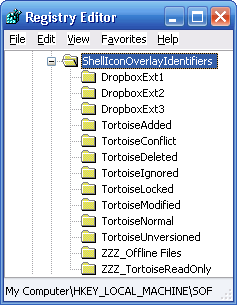
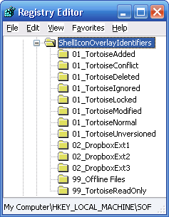
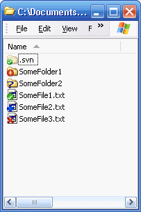

Dropbox and Tortoise SVN (Subversion) Icon Overlays in Harmony
If you’ve been using both Dropbox & Tortoise SVN simultaneously on Windows then you may have come across some irritating issues with the icon overlays used by both programs in Windows explorer.
Fix Missing Icon Overlays
Some users may be experiencing issues with their overlay icons simply not appearing at all. This is probably due to the lame Windows restriction which only allows a maximum of 15 icon overlays to be used.
- Run “regedit” and locate:
"HKEY_LOCAL_MACHINE\SOFTWARE\Microsoft\Windows\CurrentVersion\ Explorer\ShellIconOverlayIdentifiers\"
At this level you will see a number of registry folders each representing a particular icon overlay. This list doesn’t show the 4 icon overlays used by the Windows system and so actually only 11 of the folders shown will actually be used, the others are just abandoned by Windows, nice one Bill!
Luckily for us the way Windows decides which 11 to use is by simply taking the first 11 in alphabetical order. Luckily again Windows doesn’t care what the folders are named in the registry and in this way we can rename the folders to ensure that the 11 icons we want to work are the first 11 alphabetically.
Ultimately however this means you’ve got to decide which icons to bin. Personally I’ve chosen “Offline Files” (some icon used by Windows sync which I’ve never seen), and “TortoiseReadOnly”. You may however have to ditch more depending on what programs you’ve got installed and so the decision is up to you, sorry peeps you’re on your own here.
NOTE: At this point I must stress its always advisable to backup before editing the registry.
- Rename the folders so there in the order you want (mine looked like below):
 - Restart the “explorer.exe” process by killing in it task manager and then restarting (using File – “New task” – explorer)
And bingo, any icons you were previously missing should have re-appeared.
Getting Tortoise SVN Icons to Take Priority Over Dropbox Icons
The most annoying gripe for me was that when I had a SVN project checked out to my Dropbox folder I had no idea what files when modified, added, removed etc because all Windows Explorer would ever display was the Dropbox icon overlays instead of the Tortoise SVN ones.
Using the same technique as described above you can rename the icon overlay registry folders so that the Tortoise SVN icons appear before the Dropbox icons and thus they take priority.
I renamed mine (as below left), restarted the “explorer.exe” process and now the Tortoise SVN icons take precedence (see below right):

Optionally: Disable the Dropbox “Green Tick” Overlay
Whilst searching the Dropbox forums I saw alot of users moaning that they wanted to remove the default “green tick” icon overlay used by Dropbox altogether. This can be achieved as follows:
- Within the “DropboxExt1″ registry folder (or whatever you named it earlier)
- Right click the “(Default)” value and select “Modify”
- Prefix the existing value with any text so that Windows can’t find it, e.g.
"MANUALLY_EDITED_{FB314EDA-A251-47B7-93E1-CDD82E34AF8B}" - Restart the “explorer.exe” process.
Voila, any Dropbox files/folders that aren’t sync’ing or error’ed will display their regular icon.
Hey Oliver,
Thanks for the write-up. I had been looking for instructions on disabling the icon overlay for a while. Worked like a charm!
Hey,
thanks for the article.
Do you know, if it is possible, to disable the Dropbox icons only for specific folders?
I would like to disable it for all my Tortoise-Repos in my Dropbox.
Eugen, there is not; though Explorer can be customized out the wazoo in some places (well beyond anything you would ever want) clearly it falls short here. I don’t know of any third party software that does this for you though it’d be fairly simple to build namespace extensions and realize the same end-result with a configurable front-end. The market probably doesn’t justify the effort, so you’d likely only find freeware with spyware in it. Never looked.
I assume you’re talking about open source here – DropBox has a bit of history taking liberties with the data going onto its’ systems. I actually have developed a protective technology that would be a potential fit for such things, if there is enough interest…
I don’t understand the reasoning inside “Optionally: Disable the Dropbox “Green Tick” Overlay”.
If we don’t want Dropbox green tick, why are we told to remove the “DropboxExt1″ registry key? Or change its name to something like zzz”DropboxExt1″ to make sure it’s not in the first alphabetical position and thus not used?
Sorry. Typo error in previous message..
… why are we **not** told to remove the “DropboxExt1″ registry key?
@LSP, maybe removing the DropboxExt1 registry key will work, why don’t you try it?
I wrote this article a long time ago, and in fact I don’t even use Windows any more. I suspect I probably wanted to leave the DropboxExt1 key incase I later changed my mind and want to revert the changes. So in instead of removing the key I instead deliberate ‘broke’ the link to it.
HTH